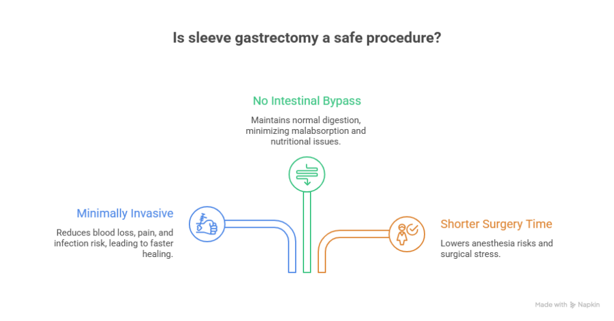
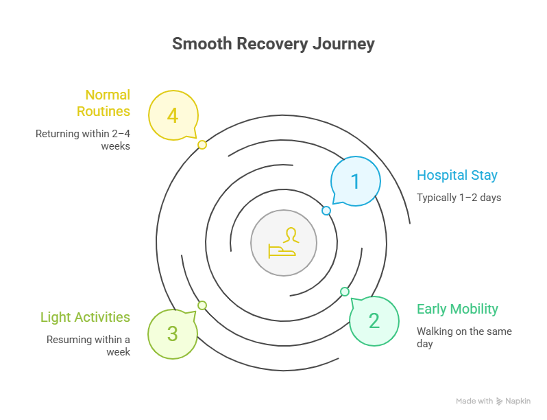

Sleeve gastrectomy is one of the most widely performed bariatric procedures for long-term weight management. As obesity continues to increase worldwide, many individuals who fail to achieve lasting results through diet, exercise, and medical treatment begin to consider surgical options. A common concern among patients is whether sleeve gastrectomy is safe, especially when surgery involves permanent changes to the digestive system. Understanding the safety profile of this procedure is crucial before making an informed decision.
When performed for the right medical reasons and under expert supervision, sleeve gastrectomy is considered a safe and effective treatment for obesity and related health conditions. With advanced surgical techniques and strict safety protocols, Sleeve Gastrectomy Surgery in Delhi has become a trusted option for patients seeking sustainable weight loss and improved overall health.
Is Sleeve Gastrectomy Safe?
Is sleeve gastrectomy safe? Learn about benefits, risks, recovery, and candidacy with expert guidance from Dr. Atul Peters for informed weight loss decisions.
Book Your Appointment TodayUnderstanding Sleeve Gastrectomy
Sleeve gastrectomy, also known as gastric sleeve surgery, is a bariatric procedure in which approximately 70–80% of the stomach is permanently removed. The remaining stomach is reshaped into a narrow tube, which significantly limits food intake and promotes early satiety.
This procedure also reduces the production of ghrelin, the hormone responsible for hunger. As a result, patients experience reduced appetite, better portion control, and improved eating behavior after surgery. Unlike some other bariatric procedures, sleeve gastrectomy does not involve intestinal bypass, which contributes to its favorable safety profile.
Is Sleeve Gastrectomy Safe?
The short answer is yes—sleeve gastrectomy is considered safe when performed on properly selected patients by qualified bariatric surgeons. Like any surgical procedure, it does carry some risks, but serious complications are uncommon when medical guidelines are followed.
Over the years, advances in surgical techniques, anesthesia, and post-operative care have significantly improved safety outcomes. Most sleeve gastrectomy procedures today are performed using minimally invasive laparoscopic methods, which reduce pain, recovery time, and the risk of complications.
Why Sleeve Gastrectomy Is Considered a Safe Procedure

1. Minimally Invasive Surgical Technique
Sleeve gastrectomy is typically performed laparoscopically using small incisions rather than a large open cut. This minimally invasive approach results in less blood loss, reduced post-operative pain, lower infection risk, and faster healing. Most patients can walk within a few hours after surgery and return home within one to two days.
2. No Intestinal Bypass
One of the key reasons many patients ask, “is sleeve gastrectomy safe?” is that they are concerned about long-term digestive issues. Unlike gastric bypass surgery, sleeve gastrectomy does not involve altering or bypassing the intestines. Food continues to pass through the normal digestive route, reducing the risk of severe malabsorption and nutritional complications.
3. Shorter Surgery Time
Sleeve gastrectomy typically takes less time to perform compared to more complex bariatric procedures. A shorter surgery duration lowers the risk associated with anesthesia and reduces surgical stress on the body.
Who Is a Suitable Candidate for Sleeve Gastrectomy?
Sleeve gastrectomy is recommended for individuals who meet specific medical criteria and are prepared for long-term lifestyle changes. Suitable candidates typically include those who:
- Have obesity that has not improved with diet and exercise
- Suffer from obesity-related conditions such as diabetes, hypertension, or sleep apnea
- Have attempted medically supervised weight-loss programs without lasting success
- Are physically and psychologically fit for surgery
- Are willing to commit to long-term dietary changes and follow-up care
Proper patient selection is one of the most important factors in ensuring surgical safety and successful outcomes.
Medical Evaluation Before Sleeve Gastrectomy
Before recommending sleeve gastrectomy, doctors conduct a comprehensive medical assessment to minimize risks. This evaluation may include:
- Detailed medical history and physical examination
- Blood tests to assess metabolic health
- Heart and lung function tests
- Nutritional assessment
- Psychological evaluation
These assessments help identify potential risks early and ensure that surgery is performed safely.
Possible Risks and Complications
Although sleeve gastrectomy is considered safe, it is important to understand potential risks, which may include:
- Bleeding
- Infection
- Leakage along the stomach staple line
- Acid reflux or heartburn
- Temporary nausea or vomiting
Serious complications are uncommon, especially when surgery is performed by an experienced Bariatric Surgeon in Delhi. Early detection and timely management further reduce long-term risk.
Long-Term Safety of Sleeve Gastrectomy
Long-term studies show that sleeve gastrectomy is a safe and effective procedure for sustained weight loss. Patients who follow dietary guidelines, maintain physical activity, and attend regular follow-ups typically achieve long-lasting results with minimal complications.
Long-term safety depends on:
- Balanced nutrition
- Vitamin and mineral supplementation
- Lifestyle discipline
- Ongoing medical monitoring
Health Benefits that Improve Overall Safety
One of the reasons sleeve gastrectomy is widely recommended is its ability to improve or resolve obesity-related medical conditions, including:
- Type 2 diabetes
- High blood pressure
- High cholesterol
- Sleep apnea
- Joint and back pain
By reducing these conditions, sleeve gastrectomy lowers long-term health risks and enhances overall quality of life, further supporting its safety.
Recovery After Sleeve Gastrectomy

Recovery after sleeve gastrectomy is typically smooth when post-operative guidelines are followed. Most patients:
- Stay in the hospital for 1–2 days
- Begin walking on the same day as surgery
- Resume light daily activities within a week
- Return to normal routines within 2–4 weeks
Pain is usually mild to moderate and is effectively managed with prescribed medications.
Life After Sleeve Gastrectomy
Long-term safety and success depend on post-surgery care, including:
- Eating portion-controlled, nutritious meals
- Avoiding high-sugar and processed foods
- Taking prescribed supplements
- Attending regular follow-up appointments
Patients who follow these guidelines generally experience stable weight loss and improved quality of life.
Is Sleeve Gastrectomy Safe for Everyone?
While sleeve gastrectomy is safe for many individuals, it may not be suitable for everyone. It may not be recommended if:
- BMI does not meet medical criteria
- The patient is unwilling to follow dietary guidelines
- There are untreated mental health conditions
- There is ongoing alcohol or substance abuse
Doctors always evaluate the benefits versus risks before recommending surgery.
Is Sleeve Gastrectomy Safe?
Is sleeve gastrectomy safe? Learn about benefits, risks, recovery, and candidacy with expert guidance from Dr. Atul Peters for informed weight loss decisions.
Book Your Appointment TodayConclusion
So, is sleeve gastrectomy safe? When performed on the right patient, by an experienced surgeon, and followed by proper lifestyle changes, sleeve gastrectomy is considered a safe and effective bariatric procedure. It offers lasting weight loss and significant improvement in obesity-related health conditions while maintaining a favorable safety profile. As with any surgery, informed decision-making, expert medical care, and long-term commitment are key to achieving the best results.
Consulting an expert such as Dr. Atul Peters ensures ethical evaluation, advanced surgical expertise, and long-term patient support. For individuals considering Sleeve Gastrectomy in Delhi, expert guidance plays a critical role in achieving safe and successful outcomes.
Frequently Asked Questions
Is Sleeve Gastrectomy safe?
How risky is Sleeve Gastrectomy?
Is Sleeve Gastrectomy safer than gastric bypass?
How long does recovery take?
Can complications occur long-term?
Does Sleeve Gastrectomy cause nutritional deficiencies?
Is Sleeve Gastrectomy permanent?
Recommended Further Reading
Have Personal Health Questions?
Consult with Dr. Atul Peters and our expert multidisciplinary team at Max Smart Super Speciality Hospital, Saket, New Delhi.
Book Your Consultation